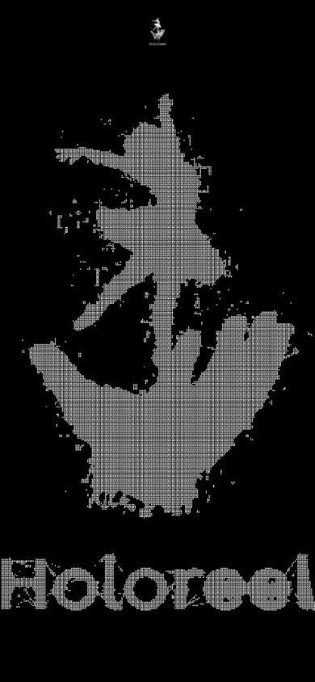
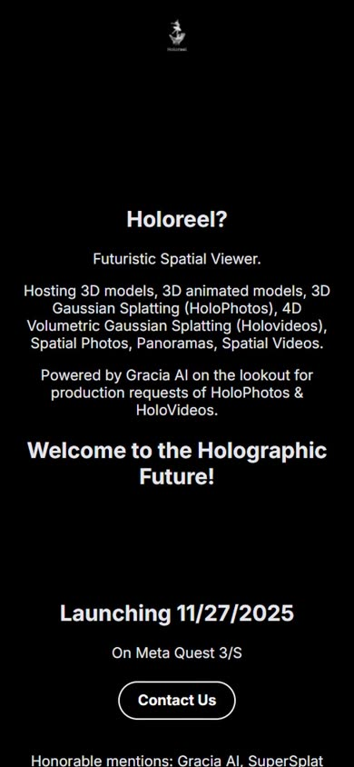

Overview
Holoreel asks what happens to the gestures of a phone feed when the posts become 3D objects. I explored it three times in five months: a concept site (September 2025); HoloreelXR, a WebXR prototype I built in about one month during the Meta XR Hackathon (November 2025) with three.js and WebXR; and Splatemō, a phone feed of Gaussian splats (January 2026).
HoloreelXR demo, recorded in mixed reality in a café: the gesture tutorial, multiplayer, 3D models and Gaussian splats.
One Feed, Two Bodies
The same six actions, side by side: in the headset each one is a hand pose, on the phone it is a tap or a swipe.
Headset · HoloreelXRPhone · Splatemō
Like
Thumbs upTap ♥
Repost
Peace signTap ↻
Save
Two-hand heartTap bookmark
Browse
Pinch and liftScroll to next
Rotate
Two-hand rotateSwipe
Scale
Two-hand pinchPinch zoom
01 · September 2025
Holoreel: the Pitch
Holoreel started as a three.js landing site for a "futuristic spatial viewer" on Meta Quest 3/S. It promised a home for 3D models, animated models, Gaussian splats ("HoloPhotos"), 4D volumetric splats ("HoloVideos"), spatial photos, panoramas and spatial videos, and announced a launch for 27 November 2025.


02 · November 2025 · Meta XR Hackathon
HoloreelXR: the Feed in Your Room
HoloreelXR is the hackathon build: a WebXR feed in mixed reality where each post floats in the room and each reaction is a hand pose, recognized from WebXR hand-tracking joints. Because none of these gestures exist on a phone, the experience opens with a seven-step tutorial (rotate, scale, grab, scroll, like, heart, repost) with a short clip of each gesture on the panel. A single pinch also grabs a post and moves it. In multiplayer, other people's hands appear in your space over a peer-to-peer connection (PeerJS).
The original idea was a feed of animated Gaussian-splat holograms. I dropped it: the pipeline for producing that content was complex and expensive. The prototype focused on the interactions instead, with simple shapes, 3D models and static Gaussian splats as posts.
03 · January 2026
Splatemō: Back to the Phone
Splatemō takes the feed back to the phone as a mobile-first Gaussian splatting prototype (three.js, Vite, TypeScript): a vertical feed of splat posts that you swipe to rotate and pinch to zoom, with like, comment, repost and bookmark buttons, a playground of volumetric effects and an off-axis camera mode. Its posts are the same splat scenes that run in the headset build: the neon alley, the haunted house and the candlelit room.
Findings
Mid-air hand gestures are tiring. Holding your arms up to react and scroll quickly leads to "gorilla arm", and the ergonomics of the headset itself limit how long a session can last. Side by side, the difference is plain: on the phone every action is a tap in the same column, in the headset each one is a held pose.
Takeaway: the project confirmed that phone patterns do not translate directly into 3D.
AI-Assisted Workflow
I built all three prototypes with an AI-assisted workflow, using AI coding tools for implementation while I directed the interaction design and tested on the device.
Source
All three repositories are public on GitHub: Holoreel, HoloreelXR (the README and package.json state the ISC license) and Splatemō. The Holoreel and Splatemō clips are screen recordings of local runs of those repositories.